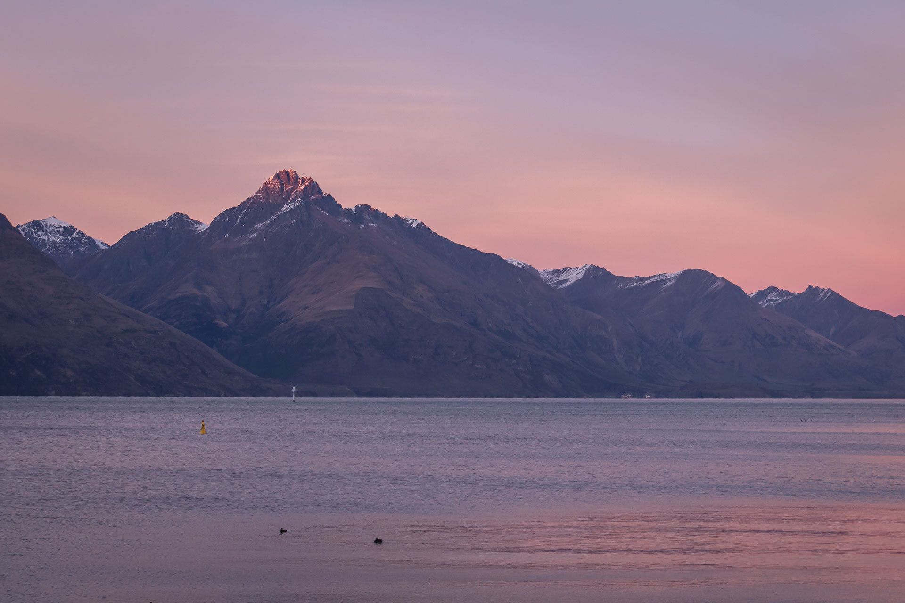

Queenstown
28 juin 2019
Salut tout le monde!
Voici quelques photos de notre voyage à Queenstown. Nous y sommes allés fin juin (Caro et moi) et début juillet (mon père et moi).
Les paysages autour de Queenstown sont magnifiques, puisque la ville est située en plein coeur des Alpes de la Nouvelle-Zélande, au bord d'un lac alpin bleu-turquoise. Nous avons vu quelques levers de soleil à couper le souffle. C'est extrêmement touristique par contre, les gens s'y rendent de partout dans le monde pour les sports de plein air (ski, vélo de montagne, tyrolienne, bungee et autres sports extrêmes).

La première fois, nous avons campé en tente dans un petit parc à 15 minutes de la ville (il faisait un peu froid, 5-10C, mais nous avons survécu!). Je crois que quelques scènes du Seigneur des Anneaux ont été filmées ici, mais nous n'avons pas trouvé l'endroit exact. Les restaurants étaient bons et la chocolaterie aussi.
Avec mon père, nous avons grimpé la montagne de Ben Lomond (juste à côté de la ville). Nous n'avons pas atteint le sommet (à l'hiver, il faut de l'équipement d'alpinisme pour le dernier bout), mais presque. Les vues d'en haut étaient superbes.